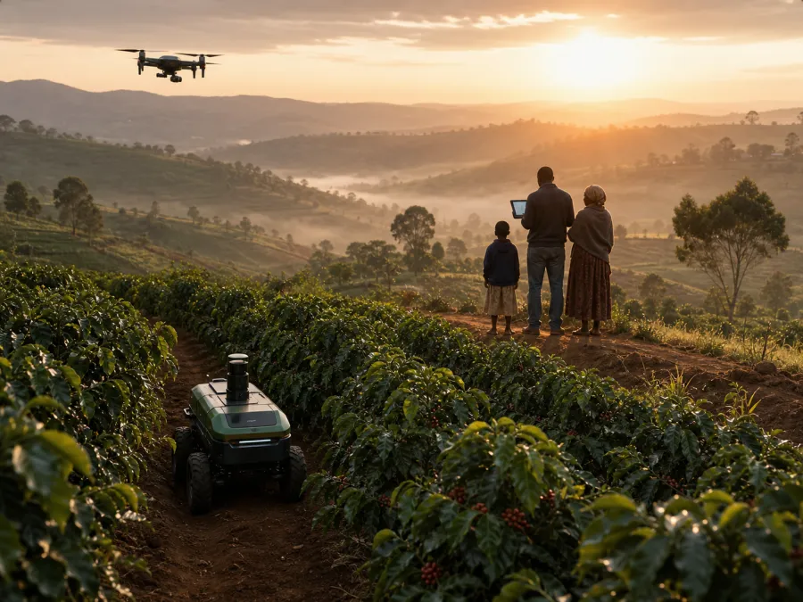
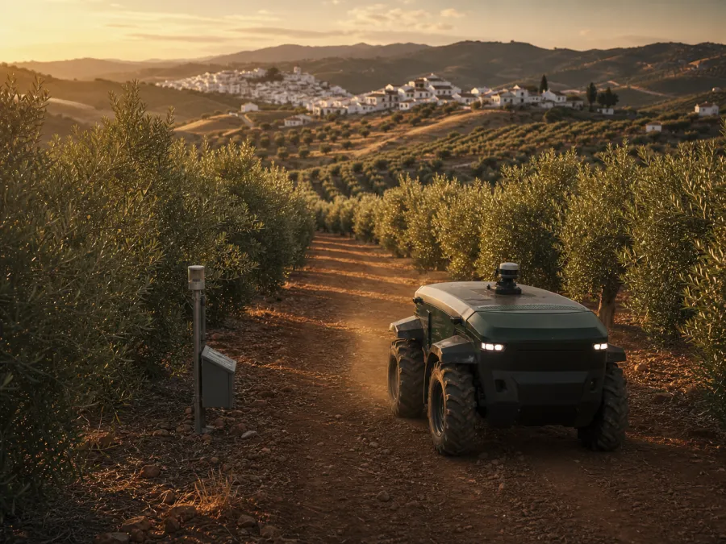

おはようございます 🌅 あなたの農場は今日も動いています
フィジカルAIが夜明けから稼働中。あなたは観る・選ぶ・受け取るだけ。
出資総額
¥240,000
3ポート / 24口
現在の評価額
¥261,480
▲ +8.9% 生育良好により上方修正
今季の野菜リターン(確定分)
12.4kg
次回発送 7/24(ミニトマト 2.1kg)
あなたの農場で稼働中のフィジカルAI
5機
畑4機+選果場ヒューマノイド1機(人の作業 0時間)
ライブ観察 LIVE
いま、あなたの区画で起きていること。魚沼・棚田ポート #07
LIVE — 固定カメラ 02
2026-07-18 07:41:23 JST
魚沼・棚田ポート #07 — コシヒカリ(出穂期)
🤖 AGRI-BOT 03 稼働中 · 🔋 82%
フィジカルAI 作業ログ
自動更新中
リターンセンター
リターンは野菜でも、お金でも、地球でも。ポートごとに、いつでも切り替えられます。
1口(¥10,000)あたりの年間リターン(デモ試算)
市価相当 ¥12,600 分の収穫物
- 年4回、収穫期に合わせて産地直送(送料込み)
- あなたの区画で採れたものだけをお届け — ロット追跡可能
- 収穫体験イベントへの優先参加権つき
※ 収穫物リターン型は「売買契約(前払購入)」として設計 — 金融規制の対象外で、小さく始めやすいスキームです。
分配・発送履歴
| 日付 | ポート | 内容 | 状態 |
|---|---|---|---|
| 7/24 | 阿蘇 #02 | ミニトマト 2.1kg | 発送予定 |
| 7/10 | 阿蘇 #02 | ミニトマト 2.4kg | 受取済 |
| 6/28 | 十勝 #15 | 第1四半期分配 ¥612 | 入金済 |
| 6/12 | 阿蘇 #02 | ミニトマト 2.2kg | 受取済 |
| 5/30 | 魚沼 #07 | 田植え完了レポート | 閲覧済 |
🚚 いま届く途中のリターン — 阿蘇 #02 ミニトマト 2.1kg あなたの区画ロット #A02-1407
🍅
収穫
HARVEST-X 11
7/23 05:12 ✓
🦾
選果・箱詰め
ヒューマノイド HMD-01
84/120箱 進行中
🧊
予冷・集荷
ヤマト運輸(自動手配)
7/24 14:00 予約済
🏠
お届け
産地直送・中間流通ゼロ
7/25 予定
このリターンは作付け前にあなたが購入済み。市場もセリも通らず、選果からパレタイズまでをヒューマノイドが担うため、収穫の約48時間後には食卓に届きます。
募集中のポート
全国の耕作放棄地が、フィジカルAIの入港で「ポート」に生まれ変わるのを待っています。
🌍 プラネタリー・ネットワーク 2036– PLANETARY構想
ポートは日本から、地球へ。あなたのポートフォリオに「地球」を組み込む。
ネットワーク累計の再生農地(デモ)
128ha
世界の耕作放棄地は約1億ha — 再生はまだ0.0001%
ネットワークが吸収したCO2(デモ試算)
412t
スギ約4.7万本の1年分に相当 — 艦隊の観察記録が証明になる
地球を観察している参加者
8,214人
観察者の目が、クレジットの信頼性になる
稼働中のフィジカルAI
47機
全機体の走行・観察データが共有学習へ

送金ポート構想☕ ナイロビ高原・コーヒーポート
世界の国際送金は年6,850億ドル、農村部ではその約半分が農業関連に使われる(IFAD)。ディアスポラが故郷の村のポートに送金し、アプリで故郷の畑をライブ観察 — 送金が「仕送り」から「故郷への投資」に変わる。

気候分散ポート構想🫒 アンダルシア・オリーブポート
温暖化2°Cでアフリカのトウモロコシ収量は最大▲33%(IPCC)。ポートを気候帯をまたいで分散保有すれば、あなたの食料は地球規模のインデックスファンドになる — 一地域の不作をネットワークが吸収する。